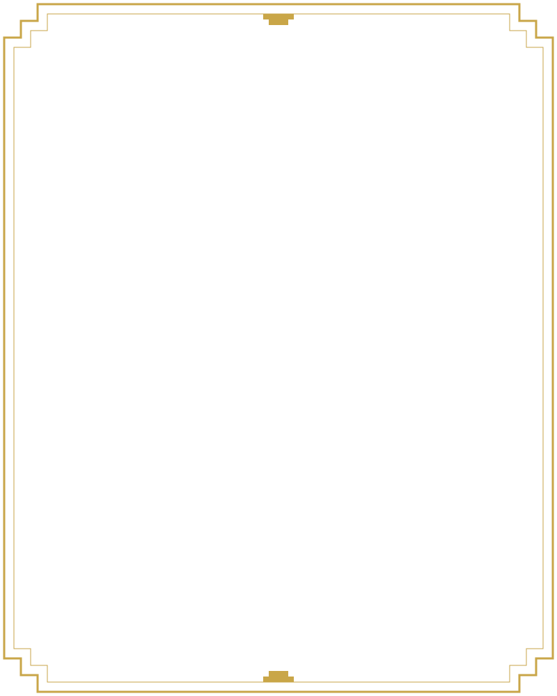
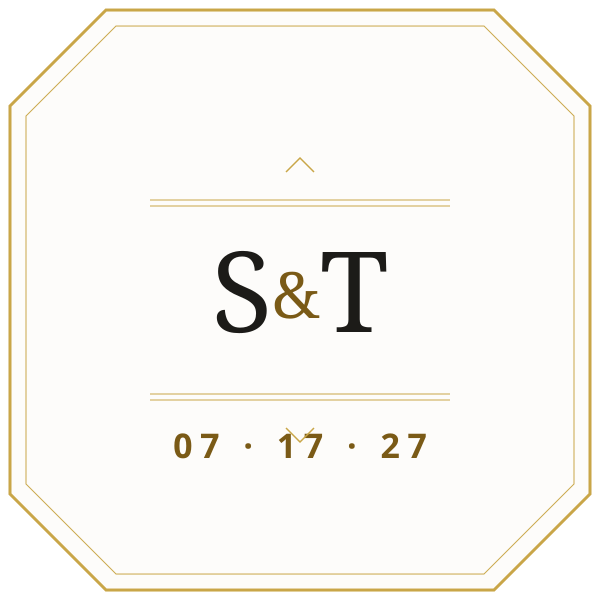
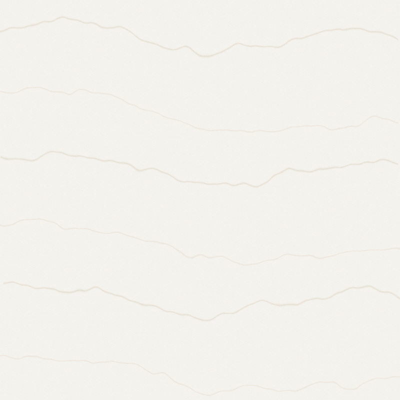

Direction
The gilded hour
- engraved
- gilded
- monumental
- calm
- hospitable
- exact
- lake-lit
- unhurried
The hour when the late sun comes across Michigan Avenue and turns a marble room gold. Tyler's taste is Art Deco; the building is Venetian Gothic from 1893 with a Carrara marble ballroom floor. The design borrows the club's confidence and the decade's geometry, not its brochure: symmetry, numbered rooms, gold on stone, and a lot of quiet.
Sara's north star for the wedding is "happy, relaxed people" and "dancing". So the monumentality lives in the frame, never in the effort: big axis, big margins, few things per screen, one reveal per page, then stillness. Guests are three generations, many travelling, many on phones in a hotel lobby; the ornament has to reassure, not perform.
- Density: art-gallery airy2 / 10
- Variance: predictable symmetric3 / 10
- Motion: restrained3 / 10
Five motifs order the home page and the story: Adventure, Place, Memory, Hospitality, Future. They are the only sections that get numerals, because they are the only content that is actually a sequence.
Palette
Marble, gold, and one lake
- Lacquer Ink
primary#1C1B18Text, primary button, evening sections - Carrara Marble
neutral#F8F6F1The page ground - Polished Marble
surface#FDFCFACards and inputs - Creme
neutral-variant#EDE5D6Alternate sections, travel and stay - Hairline
outline#D8CFBFQuiet rules and borders - Gold Leaf
gold#C9A648Ornament only; headings on ink - Gold Wash
gold-wash#F3EAD0Numeral plaques, hover tint - Bronze
tertiary#7A5A16The gold you can read: links, RSVP - Lake Blue
secondary#2E5B7BEyebrows, current nav, focus, success - Lake Wash
lake-wash#CFE0EBYour Weekend panel, focused inputs - Moss
moss#4F5F3FFoliage labels only - Muted Stone
on-surface-muted#5E5A52Captions and helper text - Oxblood
error#8E2E22RSVP validation only
The two golds rule
Gold Leaf (#C9A648) is 2.15:1 on marble. It decorates: rays, rules, frames, brackets, and headings on Lacquer Ink, where it reaches 7.41:1. Bronze (#7A5A16) speaks: any gold with words in it on a light ground is Bronze, at 5.89:1 on marble. There is no third gold.
The one blue rule
Lake Blue is a label or a wash, never a button. The only button colors are Lacquer Ink and Bronze, so the RSVP action is never confused with information.
Computed contrast, WCAG 2.2 (relative luminance)
| Text | Ground | Sample | Ratio | Grade | Used by |
|---|---|---|---|---|---|
| Lacquer Ink text | Carrara Marble | Aa 17 | 15.95:1 | AAA | body, headings |
| Lacquer Ink text | Creme | Aa 17 | 13.76:1 | AAA | section-alt |
| Lacquer Ink text | Lake Wash | Aa 17 | 12.72:1 | AAA | section-lake, input-focus |
| Lacquer Ink text | Gold Wash | Aa 17 | 14.34:1 | AAA | numeral-badge |
| Marble text | Lacquer Ink | Aa 17 | 15.95:1 | AAA | button-primary, section-inverse |
| Gold Leaf heading | Lacquer Ink | Aa 17 | 7.41:1 | AAA | section-inverse-heading |
| Bronze text | Carrara Marble | Aa 17 | 5.89:1 | AA | link, RSVP label |
| Bronze text | Creme | Aa 17 | 5.08:1 | AA | links on section-alt |
| Marble text | Bronze | Aa 17 | 6.05:1 | AA | button-accent |
| Lake Blue text | Carrara Marble | Aa 17 | 6.71:1 | AA | eyebrow, nav-current |
| Marble text | Lake Blue | Aa 17 | 6.71:1 | AA | banner-success |
| Muted Stone text | Carrara Marble | Aa 17 | 6.35:1 | AA | countdown-label, captions |
| Muted Stone text | Creme | Aa 17 | 5.48:1 | AA | captions on section-alt |
| Moss text | Carrara Marble | Aa 17 | 6.39:1 | AA | label-moss |
| Oxblood text | Polished Marble | Aa 17 | 7.99:1 | AAA | input-error |
| Marble text | Oxblood | Aa 17 | 7.64:1 | AAA | banner-error |
| Gold Leaf as text | Carrara Marble | Aa 17 | 2.15:1 | fails | never: ornament only |
The last row is the trap this palette is built to avoid. It is listed so nobody "fixes" the gold by making it brighter.
Type
Cut, signed, numbered
Sara&Tyler
07 · 17 · 27
Saturday, July 17, 2027, at the Chicago Athletic Association
315
days, counted from the board date
Sara and Tyler are inviting the people they love into the places, experiences, adventures, and memories that shaped their life together, and helping those guests make memories of their own.
That sentence is the brief's thesis, set in Josefin Sans at 18px with 1.65 leading. Josefin has a small x-height, so body copy sits a size above the 17px floor and never below it. Paragraphs are left-aligned inside a centered column so the axis holds without hurting reading.
- Our Story
- Travel & Stay
- Trail
- Reply by TODO(Tyler & Sara)
- Add to calendar
- RSVP
Display
CinzelRoman capitals drawn for screens, weight 500 only, tracked 0.04 to 0.06em. Never below 24px, never in running text. OFL, Natanael Gama.
Text, labels, nav
Josefin SansA 1920s geometric with signboard proportions and seven weights. Body 18px, labels 13px uppercase at 0.18em. OFL, Santiago Orozco.
Numerals
1893 to 2027Big Shoulders Display, Chicago's municipal typeface, for every number: countdown, dates, section numerals, tables. Tabular lining figures. OFL, Patric King.
Pairings compared
| Pairing | Source | Verdict |
|---|---|---|
| Cinzel + Josefin Sans + Big Shoulders Display | Brief; ui-ux-pro-max lists Cinzel + Josefin Sans as its "Real Estate Luxury" pairing (architecture, interiors) | Chosen. Cinzel is a Roman capital drawn for screens, the nearest thing to letters cut in the CAA limestone. Josefin is a 1920s geometric with signboard proportions and seven weights, so labels and body come from one family. Big Shoulders is Chicago's municipal face and gives every number a civic voice. Each family has exactly one job. |
| Poiret One + Didact Gothic | ui-ux-pro-max "Art Deco" pairing | Rejected. Poiret One is one hairline weight and reads as Gatsby costume; it fails below 40px and cannot carry a heading on a phone. Didact Gothic is a neutral schoolbook sans with no relationship to the building. |
| Bodoni Moda + Jost | ui-ux-pro-max "Luxury Minimalist" | Rejected. A didone belongs to a fashion house, not an 1893 athletic club; Jost is a Futura revival that reads Bauhaus rather than Chicago, and the pair still needs a third face for numerals. |
| Marcellus + Tenor Sans | Proposed alternative (both OFL, same designer lineage as Cinzel's Trajan tradition) | Near miss. Marcellus is a single-weight Trajan-style capital, so hierarchy would depend on size alone; Tenor Sans is handsome but single-weight too and has no numeral character. Both would need Big Shoulders anyway, which makes Cinzel + Josefin the stronger two. |
| Playfair Display + Inter; Great Vibes + Cormorant Infant | ui-ux-pro-max "Classic Elegant" and "Wedding/Romance" (top results for "wedding") | Excluded by rule: Playfair, Inter, Cormorant, and script faces are anti-references in the brief and stylelint. |
Ornament
Drawn from code, owned outright
Every motif is generated by scripts/art/gilded-hour.mjs with no randomness (the marble veins use a fixed turbulence seed) and only theme colors, so there is nothing to license and nothing to trace. The corner module is 24px; every stepped corner is cut from it.
sunburst-hero.svg 1440×720chevron-divider.svg 1200×40
stepped-frame.svg 800×1000corner-bracket.svg 160×160
monogram-frame.svg 600×600
marble-texture.svg 800×800numeral-badge-01.svg 200×200Rules of use: the sunburst appears once per site, behind the names on the home hero. The chevron rule separates major sections and draws itself in the first time it enters the viewport. Stepped frames hold photographs, never text. Corner brackets hold quotes and the "Sara remembers / Tyler remembers" panels. The monogram plaque sits at the center of the nav frieze, on the password gate, and on the RSVP confirmation.
Layout logic
One axis, mirrored margins
Thumbnails are plain rectangles at the stated width, not device mock-ups. Grey bars stand for copy. Everything that carries a fact is either from the brief or marked TODO(Tyler & Sara).
Motion
Moving through a building
- Curtain riseHome only, first visit per session. A marble panel lifts over 1100ms with a decisive ease; the sunburst fades in over the last 40%; the names follow 120ms after the panel clears.
- Elevator doorsRoute transitions. Two ink panels close from the edges to the axis (420ms), then part over the new page (480ms); a gold hairline marks the seam. Degrades to a crossfade.
- Engraved revealSection entrances. The chevron rule draws itself in over 700ms; the heading follows. Fires once, never on scroll-up.
- CountdownDigits crossfade in 280ms with a settling ease. No flip, no bounce, no elastic anything.
- Reduced motionEvery choreography becomes a 120ms opacity fade; the doors become a crossfade; digits swap without transition.
- Not herePer-card hover theatre, scroll-jacking, parallax, perpetual micro-loops, cursor effects.
References
Borrow the principle, never the pixels
The Wam Bam Club (Awwwards Honorable Mention, 2014, Absolute)
https://www.awwwards.com/sites/the-wam-bam-club
A supper club housed in the Bloomsbury Ballroom, a 1920s Art Deco venue in London.
- Borrow
- Let a real Deco room be the picture; keep the type small, disciplined, and off the photograph.
- Avoid
- Nightlife energy and jQuery-era parallax; the wedding site is calm and its guests are three generations.
Varani Gin (Awwwards Nominee, September 2025, Matteo De Filippis)
https://www.awwwards.com/sites/varani-gin
An interactive gin story mixing Art Nouveau and 1920s Gatsby cues, with a custom nav bar and a long orchestrated scroll.
- Borrow
- One orchestrated storytelling sequence per page and a nav that is clearly its own object.
- Avoid
- The glassmorphism cart, the 3D bottle, and the botanical flourishes (those belong to Conservatory, not here).
Baz Luhrmann's Gatsby Journal (Awwwards Nominee)
https://www.awwwards.com/sites/baz-luhrmann-s-gatsby-journal
A journal of the film's creative process; page-turning archive framing. (Entry page returned 502 at fetch time; noted from the Awwwards listing only.)
- Borrow
- The archive-as-journal frame fits "the permanent archive of a shared weekend" from the brief.
- Avoid
- Film-marketing spectacle and Gatsby costume; our Deco is a civic building, not a party theme.
Awwwards art-deco tag page (fetched 2026-09-05)
https://www.awwwards.com/websites/art-deco/
The tag page returned the general nominee feed (Santioni Spirits, Théâtre Rude Ingénierie, Deep White Gallery were checked and carry no Art Deco tag), so only the three entries above could be verified as Deco-adjacent.
- Borrow
- From the general feed: the current bar for transitions is one confident device per site, not many.
- Avoid
- Treating the feed as a Deco canon; it is not.
Chicago Athletic Association (from the brief, CAA kit)
https://www.chicagoathletichotel.com/
Built 1893 for the private club; Henry Ives Cobb, facade by Louis Christian Mullgardt; Venetian Gothic after the Doge's Palace; opened amid the World's Columbian Exposition. White City Ballroom: Carrara marble floor, three 19th-century fireplaces, 167 restored illuminated ceiling embellishments. Madison Ballroom: walnut parquet, crystal chandeliers. Stagg Court: the original gymnasium with an elevated running track. The Tank: the former pool with original tile and marble pillars.
- Borrow
- Marble as the ground, gold as the light on it, arched and stepped geometry as frames, numbered rooms as a sequence to walk through.
- Avoid
- The venue's own photography (copyrighted; never reuse), the "Venetian Gothic" ornament vocabulary (that is 1893; our ornament is 1920s), and building around White City before the ceremony room is confirmed.
Chicago Deco landmarks (public architectural references; verify dates before publishing)
Carbide and Carbon Building (1929, Burnham Brothers: dark green terracotta with gold leaf), Chicago Board of Trade (1930, Holabird and Root), Palmolive Building (1929). Stepped setbacks, vertical emphasis, gold leaf on a dark ground.
- Borrow
- The stepped setback as a frame profile; gold leaf on lacquer for the evening sections; verticality on the axis.
- Avoid
- Dark-first pages. Our ground is white marble; the dark moments are the exception.
1920s Chicago typography
https://fonts.google.com/specimen/Big+Shoulders+Display
Roman capitals on civic stone (the Cinzel lineage), geometric sans on signboards (the Josefin lineage; Futura and Kabel are 1927), and condensed grotesques on industrial and stockyard signage (the Big Shoulders lineage, named for Sandburg's "City of the Big Shoulders").
- Borrow
- One face per lineage, each with one job; wide tracking on capitals; numerals with civic weight.
- Avoid
- Decorative Deco display faces with inline or double-line strokes (Limelight, Poiret One); they date instantly and fail at small sizes.
Anti-references
What this must never look like
- Centered-script-on-blush templates and "Mr. & Mrs." clip art
- Watercolor floral corners (Conservatory earns foliage; Gilded Hour never paints it)
- SaaS hero + three cards, testimonial rows, bento grids
- Glassmorphism, purple or indigo gradients, glows, neon
- Gatsby-party costume: feathers, champagne towers, black-and-gold everything
- Gold text on white, gold buttons, gold icons that carry meaning
- Bouncy or elastic motion; scroll-jacking; parallax
- Inter, Roboto, Arial, Helvetica, Space Grotesk, Fraunces, Playfair, Cormorant, Instrument Serif, any script face
- The venue brochure: its photographs, its "timeless elegance" copy, its room hierarchy
Sibling
How this differs from Conservatory
Both themes share one palette family (white and ivory, gold, light blue, creme and light brown, moss) and one content model. Everything else diverges on purpose: a guest switching themes should feel they walked into a different room of the same house.
| Axis | Gilded Hour | Conservatory |
|---|---|---|
| Ground | White marble; ornament is drawn on it | Creme with sky-blue washes; ornament grows across it |
| Layout logic | One centered axis, mirrored margins, monumental plinths | Organic asymmetry, offset images, hanging captions |
| Navigation | Frieze: monogram centered, three links each side; fixed bottom elevator panel on phones | Botanical index: a hanging list with leaf marks; drawer on phones |
| Ornament | Sunburst, chevron rule, stepped frame, corner brackets, octagonal plaques | Botanical line-art borders, pressed-flower cards |
| Rhythm | Numbered acts that open identically; chevron rules between them | Irregular spacing, leaves settling, soft parallax |
| Type | Cinzel / Josefin Sans / Big Shoulders Display | Gloock / Spectral / Cardo italic accents |
| Motion | Curtain rise, elevator doors, engraved reveal; one per page | Leaves settling, soft parallax; continuous but quiet |
| Photographs | Inside stepped gold frames on the axis | Pressed into cards at an angle, captions hanging |
| Gold | Leaf for lines, bronze for words | A warm highlight inside foliage, rarely structural |